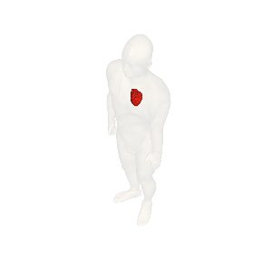

Step2: Move a viewpoint
Output of the sample program

Move a viewpoint from the center of anterior/vental side of the body
horizontally and vertically around a focal point by 45 degrees, respectively.
The focal point is the center of the body.
Explanation of the sample code
See also Javadoc for details of each methods.
line 18-22： Set a viewpoint, which consists of a reference point and offsets from it along horizontal/longitude and vertical/latitude direction in degrees, respectively.
Related properties of AgProp
| Property |
Description |
Default value |
Setter example |
| Reference point of a viewpoint |
Set either front, left, right or back as the rough position of eyes (viewpoint).
The viewpoint is on the equator of the bounding sphere of a whole body or specified organs.
"front" (the anterior/vental side of a human body, (longitude、latitude)=(0,0))
"right" (the right side of the body, (lng, lat)=(90,0))
"back" (the posterior/dorsal side of the body, (lng、lat)=(180,0))
"left" (the left side of the body, (lng、lat)=(270/-90,0)) |
front |
setViewpoint("front") |
| Offset from the reference point (horizontal/longitude) |
Offset from the reference point along the horizontal/longitude direction.
Right/east direction is positive. Unit is degree.
|
0 |
setViewpointOffsetHorizontal(-45) |
| Offset from the reference point (vertical/latitude) |
Offset from the reference point along the vertical/latitude direction.
Upper/north direction is positive. Unit is degree.
|
0 |
setViewpointOffsetVertical(45) |
| Rotation angle of the image |
Set how many degrees the image is rotated clockwise. |
0 |
setViewRotate(90) |
Sample code
1 import jp.dbcls.ag.AgClient;
2 import jp.dbcls.ag.AgOrgan;
3 import jp.dbcls.ag.AgProp;
4
5 import java.util.ArrayList;
6
7 /**
8 * Step2 視点を正面右（水平、経度）方向、正面上（垂直、緯度）方向にそれぞれ45度移動する。
9 */
10 public class Step2 {
11 static AgProp prop = null;
12
13 static ArrayList organs = null;
14
15 public static void main(String[] args) throws Exception {
16 prop = new AgProp();
17 /** 基準位置(人体正面)を指定します **/
18 prop.setViewpoint("front");
19 /** 基準からのずれ（水平、経度方向）を指定します **/
20 prop.setViewOffsetHorizontal(45);
21 /** 基準からのずれ（垂直、緯度方向）を指定します **/
22 prop.setViewOffsetVertical(45);
23
24 organs = new ArrayList();
25 AgOrgan o;
26
27 o = new AgOrgan();
28 o.setName("skin");
29 o.setOpacity(0.2);
30 organs.add(o);
31
32 o = new AgOrgan();
33 o.setName("heart");
34 o.setRGBA(255, 0, 0, 1.0);
35 organs.add(o);
36
37 String imageurl = AgClient.getImage(prop, organs);
38
39 System.out.println("imageurl=" + imageurl);
40 String imagefile = "step2.png";
41
42 AgClient.saveFile(imageurl, imagefile);
43 }
44 }